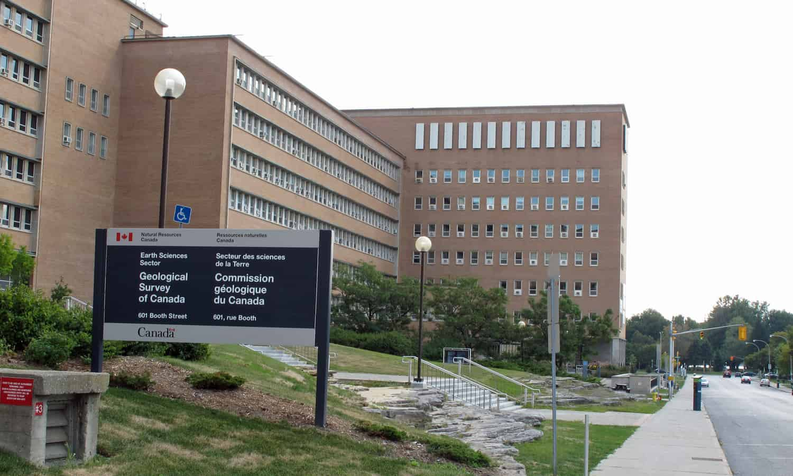

Natural Resources Canada - Web Application Developer
Introduction
My final co-op position was at Natural Resources Canada where I returned to work on the Canada 3D project in the role of Web Application Developer. The application that I was hired to work on on is called Canada 3D and has been in development for a number of years.
About the Employer
Natural Resources Canada is a department of the Federal Government of Canada. I was positioned remotely for the summer working on a project in the Lands and Minerals Sector. There are many different ongoing scientific development projects at any given time in this sector and the actual operations of the sector range widely from field work and mapping and the way to geophysics. The Canada 3D project that I was working on is an effort to provide a compiled, searchable, and visual source for geological data across Canada.
Job Description
In my position as Web Application Developer I was assigned a sub-project for the development of web application features. I was specifically working on researching and implementing potential PDF processing and web hosting systems to improve the featureset of a web application that hosts national geospatial data. I was very familiar with the web application in which I was hired to integrate this new feature into as in my previous work term I had assisted in the construction of both the backend and frontend of the web application.
While completing this work I was on a small development team containing 3 developers, as well as 3 other interdisciplinary team members. A large portion of my role was the research and testing of a series of different PDF related software development kits (SDKs). This included SDKs basid in Python, Javascript, and some pre-constructed command line tools.
I spent the first few weeks of my 4 month term gathering information from my team members and project lead in order to research potential software library integrations to complete the goal of upgrading the PDF system of the application. This research consisted largely of searching different industry IT sites online for recommended solutions as well as contacting different SDK providers to ask for information about their products. This eventually led into the next 3 months of my co-op which I spent implementing and automating a JavaScript based PDF SDK. I used this SDK to automatically parse through published geospatial papers that needed to be tied into the data in our system and dynamically create hyperlinks that access our application database. This involved creating a library of bash scripts to handle the automatic execution of JavaScript files.
Throughout my co-op I was also responsible for presenting demos of the PDF processing and web application integration at least once a month. This often involved modifying the Handlebars based front-end of the web application as well as some of the supporting JavaScript to provide faux examples of how the processed PDFs could function in the web interface.
Goals
My work terms goals this semester were heavily based on learning about new tools and skills required for my position, and applying the result of that learning to future careers.
The first goal that I set for myself was to learn some of the common differences between open source and commercial SDKs through the research I was completing on PDF SDKs. I hoped that this knowledge would both help me in my current role of finding a technical solution for the web application, and provide me with insight to assist in increasing efficiency of future SDK research in similar positions. Through discovery and cross analysis of SDKs such as PDFTron (commercial) and PDFKit (open source) I was able to select and implement an appropriate solution for the Canada 3D web application. I also came to the conclusion that the most significant difference between most free and commercial software libraries is often the featureset they provide as opposed to implementation effort required. This assisted in improving implementation and testing time of a series of possible solutions, improving the final product I was able to produce.
This work term I also set out to improve my ability to more accurately provide task timelines for my work. This was incredibly important in my position as, outside of weekly meetings, I was extremely self-regulated with little oversight. I found that this goal was a particularly difficult one to measure during the first portion of my co-op where I was completing extensive research and testing. Some of the tasks I thought would be done within 4 hours could end up taking multiple days due to the lack of documentation and information available on certain SDKs. I also learned through these hiccups in time planning that it was consistently far easier to produce more accurate time estimations by taking an hour for initial analysis of tasks and then letting my team members know how long I thought things would take based on that analysis. By following this process of events, my timelines for research, testing, and integration of the PDFTron SDK were all within 20% of expectation. While this wasn’t the perfect result that I was hoping for, these findings will be useful for future positions.
The final goal I set for the term was to learn more about Microsoft Azure and how to make full use of its features. The code base that my team was using was entirely based out of Azure, a tool which I had no previous experience with, making it vital that I quickly learn how to use basic functions. I took some online courses offered for free from Microsoft in order to familiarize myself with Azure features and operational management. This training, along with exploring some of the basics with my development team members, taught me more than I needed to know to set up secure remote connections to Azure repositories and create automated pipelines for Azure app deployment. It became very clear late in my term that Azure pipeline automation greatly improved the speed of testing feature integration in the web application. Unfortunately, my team and I also learned about some of the flaws that come with using Azure from remote machines, such as the constant requirement of a secure network connection in order to request application deployment whereas typically an ssh key would be enough in other software. In general, collaborating with my team members to solve some of the issues with Azure greatly expanded my knowledge of the platform.
Conclusion
Returning to Natural Resources Canada in a new role helped me learn more about organizational management as I was placed into a position where I was able to work and thrive in a highly independent environment. While I was working as part of a team, I was given far more responsibility in this position than I have in previous roles and that helped me to develop a greater ability to self-manage my work. Through my communication with SDK providers I was also able to greatly expand my knowledge of inter-business dealings and communication, which I think will be vital as I move forward into higher level roles post graduation.
Acknowledgments
I would like to thank Boyan Brodaric, Roman Mitura, and Gabrielle Huot-Vezina for providing me with this opportunity and supporting me during my time at Natural Resources Canada.